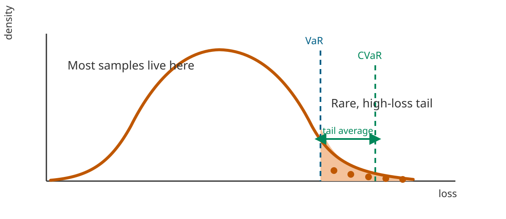
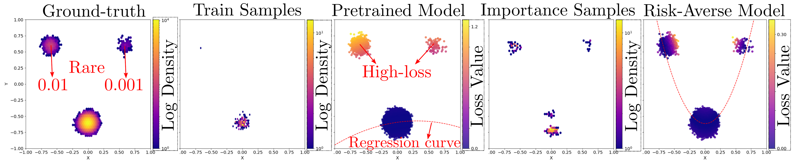
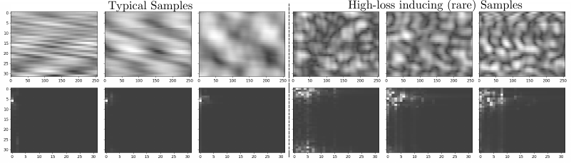

Most models are trained to do well on average. But in many real systems, the average case is not the main concern. What really matters is what happens on the rare, bad cases where the loss is unusually high. That is exactly the setting where CVaR becomes a useful objective: it asks the model to care about the tail of the loss distribution instead of just the mean.
The difficulty is that these rare, high-loss cases are hard to see often enough in ordinary training data. Our idea is simple: first identify which inputs are likely to be hard for a pretrained model, then use a score-based generator to create more of those informative samples. Once we have them, we feed them into downstream fine-tuning with the right importance weights so that the optimization still targets the original risk-averse objective.
The main mathematical object in the paper is Conditional Value-at-Risk (CVaR). Informally, CVaR does not ask, “what is the average loss?” It asks, “if we only look at the worst cases, what is the average loss there?” This makes it a natural objective when rare failures matter more than typical ones.
A useful way to think about it is through the tail of the loss distribution. First, choose a risk level, such as the worst 5% of outcomes. The corresponding threshold is the Value-at-Risk (VaR). Then CVaR is the average loss among the samples beyond that threshold. That is exactly why ordinary training can struggle: if very few samples land in the tail, the optimizer gets only a weak and noisy signal about the part of the distribution that CVaR actually cares about.

Figure 2. A simple picture of CVaR. VaR marks the start of the rare high-loss region, and CVaR averages the loss over that tail. The whole point of the paper is to generate more informative samples from this region so that risk-averse training has a much better signal.
The toy Gaussian mixture example shows the whole idea in a very visual way. The base data distribution has rare components that barely appear when we sample in the usual way. As a result, a model trained from those ordinary samples never really learns to handle those regions well, and they end up becoming high-loss pockets.
Our method shifts the sampling process toward those hard regions. That makes the rare parts of the distribution visible during training, instead of leaving them almost unseen. The toy example is useful because it makes the mechanism intuitive: the generator is not trying to make arbitrary new data, it is trying to make the specific data points that matter for tail-risk optimization.

Figure 3. In the toy example, the rare parts of the data distribution are easy to miss with ordinary sampling. Loss-guided generation brings those regions back into the training loop and helps the final risk-averse model learn from them directly.
The same idea becomes much more interesting in the wireless communication setting studied in the paper. Here the downstream task is CSI compression, where rare channel realizations can lead to especially poor reconstruction quality. If training mostly sees typical samples, the model can look fine on average while still failing badly on the examples that matter most for robustness.
The generated samples in this part of the paper are not random curiosities. They correspond to difficult channel configurations that are rare under the base distribution but highly informative for risk-aware training. This is where the framework feels especially practical: it turns generative modeling into a way of finding and replaying the hard cases that ordinary training would probably not revisit often enough.

Figure 4. The left columns show more typical channel samples, while the right columns show rare high-loss samples produced by the loss-guided generator. These are exactly the kinds of examples that can matter a lot for tail performance but almost never show up often enough in ordinary training.
The main takeaway is straightforward: if we care about bad-but-rare outcomes, then training should spend more time on exactly those outcomes. This paper shows a clean way to do that with generative modeling. Instead of treating a generator as a general-purpose sampler, it uses the generator as a tool for finding the examples that matter most for risk-averse learning.
If you find this work useful, please cite our paper.
@inproceedings{kim2025informative,
title={Generating Informative Samples for Risk-Averse Fine-Tuning of Downstream Tasks},
author={Kim, Heasung and Lee, Taekyun and Kim, Hyeji and De Veciana, Gustavo},
booktitle={Advances in Neural Information Processing Systems},
year={2025},
note={Spotlight}
}